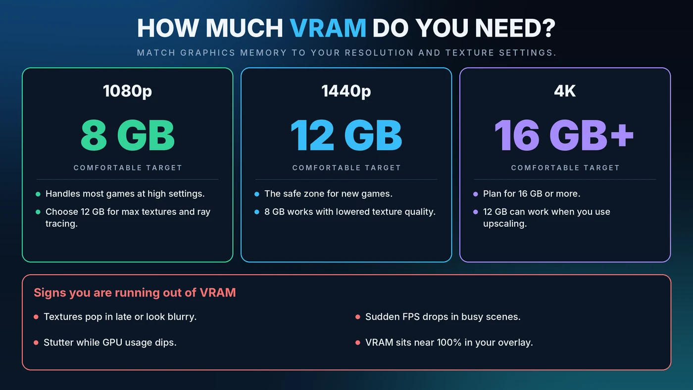

How Much VRAM Do You Need for Gaming? 8GB vs 12GB vs 16GB
VRAM is the one spec that can quietly ruin a good graphics card. When it runs out, frame rates do not slowly decline. They fall off a cliff. Here is how much you really need at each resolution and how to tell when you are short.

Short Answer: How Much VRAM Do You Need?
- 1080p: 8GB is a comfortable baseline. Choose 12GB if you want maximum textures or ray tracing.
- 1440p: 12GB is the safe zone for newer games. 8GB can work if you lower texture quality.
- 4K: Plan for 16GB or more. 12GB can work when you use upscaling.
These targets reflect how recent games behave. Demands keep rising, so check current reviews for the games you play most.
What Is VRAM?
VRAM is the graphics card's own memory, like a workbench built right next to the GPU. It holds textures, frame buffers, geometry and ray tracing data that the GPU needs instantly. It is separate from system RAM, which serves the CPU. If you also want the system side, read our guide on RAM and gaming bottlenecks.
VRAM Needs at 1080p, 1440p and 4K
1080p
Most games run well on 8GB at high settings. If you like ultra textures, ray tracing or heavy mods, 12GB gives you breathing room. See our resolution bottleneck guide for how load shifts between CPU and GPU.
1440p
This is where 8GB starts to feel tight in demanding new games. A 12GB card is the comfortable choice, and it holds up well as game requirements grow.
4K
At 4K, frame buffers and textures are larger. Aim for 16GB or more if you want high texture settings without compromise, and expect upscaling to reduce the load somewhat.
What Uses the Most VRAM?
- Texture quality. This is usually the biggest factor, and often the cheapest to lower.
- Resolution. More pixels mean larger buffers.
- Ray tracing. It adds extra data the GPU must keep ready.
- Frame generation. It adds some overhead. Learn more in our DLSS, FSR and frame generation guide.
- Mods and high-resolution texture packs.
- Background apps. Browsers with hardware acceleration and extra monitors use some graphics memory too.
Is VRAM a Bottleneck?
Not in the same way as a CPU or GPU. A CPU or GPU bottleneck is about speed. VRAM is a capacity limit. While there is enough, you notice nothing. Once it is full, the card has to borrow system RAM across the PCI Express connection, which is far slower. The result is stutter, texture pop-in and poor 1% lows. That is why a card with plenty of raw power can still feel rough with too little memory. For the speed side, see our GPU bottleneck guide.
Signs You Are Running Out of VRAM
- Textures pop in late or look blurry
- Sudden FPS drops in busy scenes
- Stutter while GPU usage dips
- Memory usage sitting near 100% in your monitoring overlay
One caution: games often reserve more VRAM than they strictly need, so a high number alone is not proof of a problem. Judge by symptoms. Use a tool like MSI Afterburner, or Task Manager's dedicated GPU memory graph. See our guide to checking PC usage and fixing stuttering for more.
How to Fix a VRAM Shortage
- Lower texture quality by one step. This often has little visible impact and frees a lot of memory.
- Turn down or off ray tracing, which is a heavy VRAM user.
- Use upscaling such as DLSS or FSR to reduce the internal render resolution.
- Close background apps, especially browsers and overlays.
- Lower the resolution if the other steps are not enough.
- Update your graphics driver and the game.
8GB vs 12GB vs 16GB: Which Should You Buy?
- 8GB: Fine for budget 1080p gaming and esports. Expect to lower textures in the newest games.
- 12GB: The sweet spot for most people, strong at 1080p and capable at 1440p.
- 16GB or more: The long-lasting choice for 4K, heavy mods and keeping a card for many years.
Do not buy on VRAM alone. A slow GPU cannot use a huge pool of memory, and memory bandwidth matters too. Pair parts sensibly with our CPU and GPU pairing guide, and check your balance with the bottleneck percentage guide.
Can You Add More VRAM?
No. On a dedicated graphics card, the memory is built onto the board. Your only options are to lower settings or buy a card with more. Integrated graphics are different, because they share system RAM, and adding memory can help there.
Conclusion
Match VRAM to your resolution and how you play: 8GB for 1080p, 12GB for 1440p and 16GB or more for 4K. If you are short, lower texture quality first, since it is the quickest fix. When you are ready to plan your next upgrade, start with the free Bottleneck Calculator.
Frequently Asked Questions
How much VRAM do I need for 1080p gaming?
8GB is a comfortable baseline for most games at high settings. Choose 12GB if you want maximum textures, ray tracing or heavy mods.
Is 8GB of VRAM enough?
It is enough for many games at 1080p, but it can feel tight at 1440p in newer titles. You may need to lower texture quality to avoid stutter and texture pop-in.
Does more VRAM increase FPS?
Not by itself. Extra VRAM only helps when a game needs more than your card has. Past that point, more memory does not add frames.
Is 16GB of VRAM overkill?
Not for 4K, heavy mods or if you plan to keep your card for several years. For 1080p and many 1440p setups, 12GB is usually plenty today.
Is VRAM a CPU or GPU bottleneck?
Neither. It is a separate capacity limit. When VRAM fills up, the card uses slower system memory, causing stutter and low 1% lows even if the CPU and GPU are well matched.